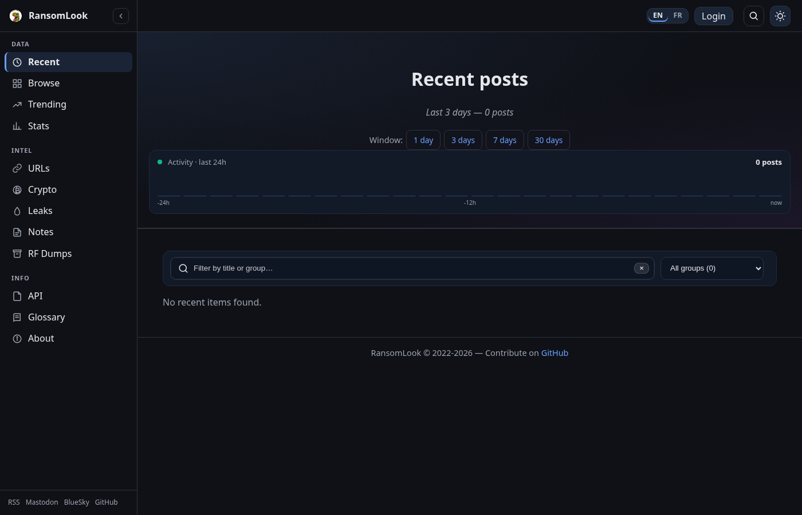
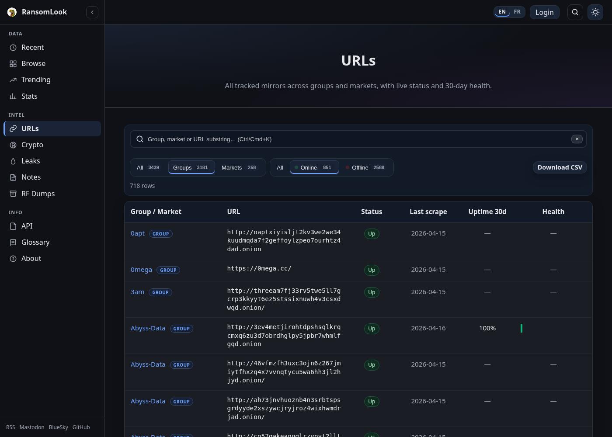
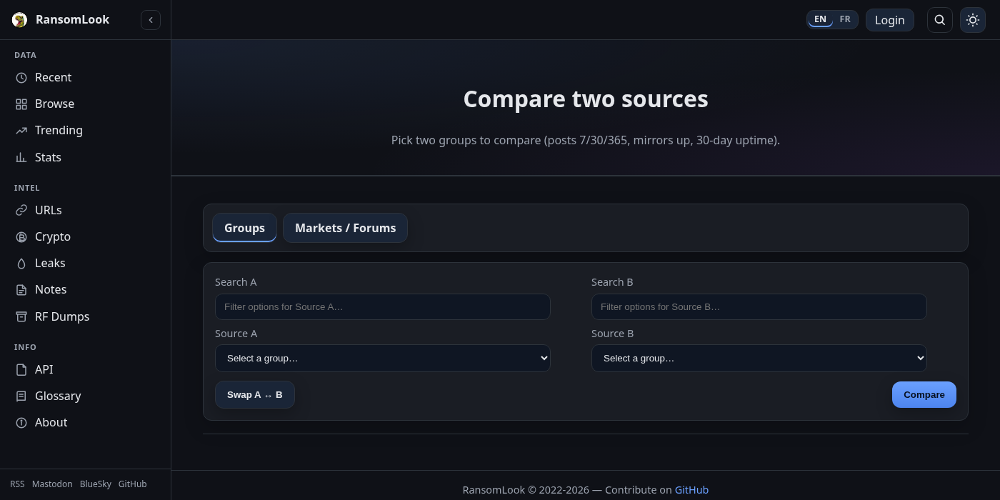
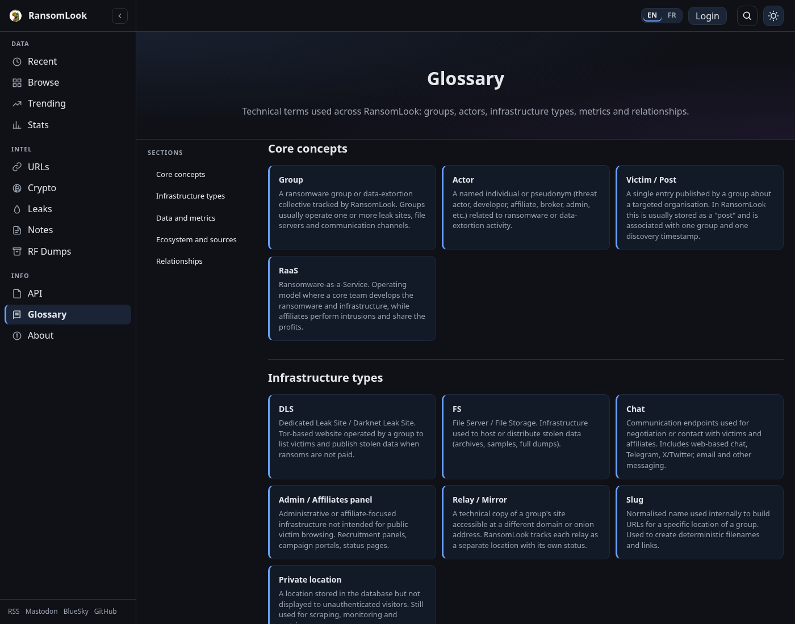
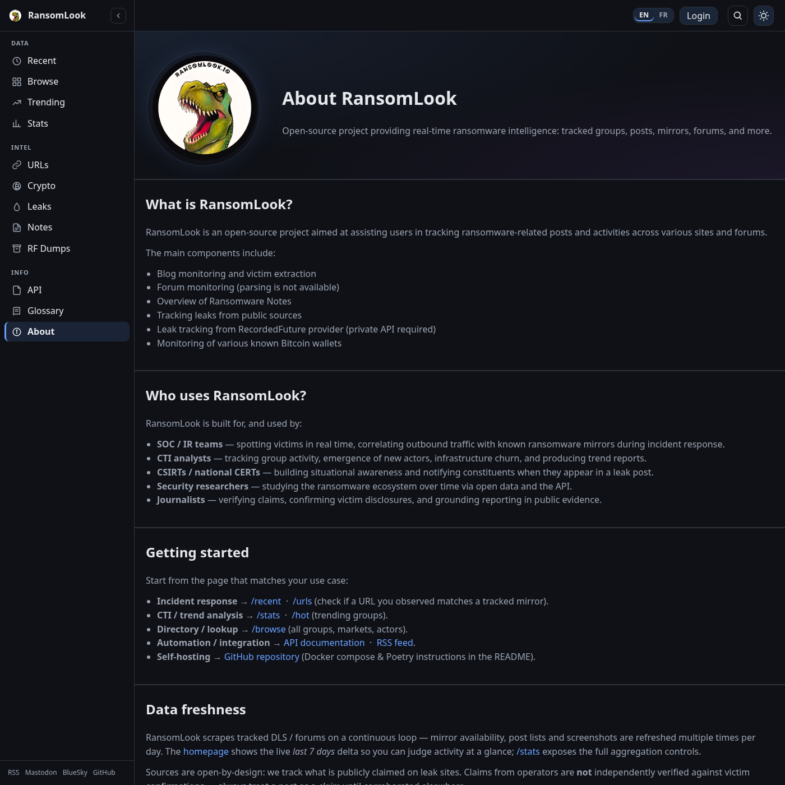

Interface web#
Cette page présente toutes les pages publiques d’une instance RansomLook. Elles sont disponibles sur l’instance publique officielle à https://www.ransomlook.io.
La navigation est organisée en trois groupes dans la barre latérale :
Data — Recent, Browse, Trending, Stats
Intel — URLs, Crypto, Leaks, Notes, RF Dumps
Info — API, Glossary, About
Page d’accueil (/)#

La page d’accueil résume l’activité en direct :
total des publications ransomware suivies,
indicateurs clés des 7 derniers jours avec delta vs la semaine précédente,
Top movers (groupes aux plus fortes variations hebdomadaires) et Dernières publications,
une sparkline 30 jours de l’activité de publication globale,
Publications récentes (/recent)#
{kind=link}

Liste chronologique plate des publications de victimes pour tous les groupes suivis.
Sélecteur de fenêtre temporelle —
1 / 3 / 7 / 30 jours. Fenêtre par défaut : 3 jours.Plafond dur à 2000 lignes par fenêtre. S’il est dépassé, un message indique combien de lignes ont été coupées.
Filtres live : recherche libre (titre + nom du groupe) et liste déroulante par groupe.
Sparkline 24 heures de l’activité dans le hero.
Parcourir (/browse)#

Grille de cartes de toutes les entités suivies — groupes de ransomware, marchés/forums et acteurs de menace.
Onglets pour basculer entre Tous / Groupes / Marchés / Acteurs.
Chips de santé (Healthy / Degraded / Offline) filtrent les entités par disponibilité de miroir.
Barre alphabétique (A-Z / 0-9 / #) et recherche live par nom/alias.
Chaque carte expose le statut du parser, le flag privé, le flag wanted et le nombre d’alias.
URLs (/urls)#
{kind=link}

Vue plate de chaque URL de miroir suivie pour les groupes et marchés. Utile aux équipes IR pour vérifier si une URL observée correspond à un miroir connu.
Filtres : type d’entité (Tous / Groupes / Marchés), disponibilité (Tous / En ligne / Hors ligne), recherche live sur le nom d’entité et la portion d’URL.
Une ligne par miroir — affiche l’entité, l’URL complète, le statut en direct, la date de dernier scrape, l’uptime sur 30 jours et une sparkline de santé sur 30 jours.
Export CSV (
/urls.csv) respecte les filtres actifs.Respect de la confidentialité : les entités et URLs privées sont masquées aux visiteurs anonymes.
Tendances (/hot)#

Classe les groupes par activité de publication sur une fenêtre configurable (1/3/7/14/30/90 jours).
Modes de tri : Tendance (Δ%), Volume, Nouveaux entrants.
Export CSV du classement.
Sparkline par ligne montrant la distribution quotidienne des publications sur la fenêtre.
Statistiques (/stats)#

Graphiques interactifs (Plotly) couvrant les publications dans le temps.
Contrôles : période (7/14/30/90 jours ou plage personnalisée), agrégation horaire/quotidienne/hebdomadaire, moyenne glissante optionnelle (3/7/14), filtre Top-N groupes (5/10/20/tous), normalisation en pourcentage.
Trois graphiques : barres Top-N, aires empilées, nuage chronologique. Export PNG sur chacun.
Export CSV du jeu de données filtré, URL partageable pour reproduire une vue.
Comparer (/compare)#
{kind=link}

Comparaison côte à côte de deux entités (groupes ou marchés/forums).
Publications sur 7j/30j/365j, miroirs en ligne, uptime 30j, flags Captcha et RaaS.
Graphiques en direct : barres de volume de publications + jauges de disponibilité des miroirs.
Crypto (/crypto)#

Portefeuilles de cryptomonnaies groupés par acteur.
Grille de chips avec filtre live par nom / alias.
La page de détail par groupe (
/crypto/<name>) liste les portefeuilles observés par blockchain, avec leurs transactions, des filtres (plage de dates, montant min/max, direction) et l’intégration Breadcrumbs pour les blockchains supportées.Export CSV par portefeuille et par groupe.
Leaks (/leaks)#

Bases de leaks publiques suivies pour enrichissement. Recherche par nom/description/URL/titre. Chaque entrée ouvre une fenêtre modale avec taille, nombre d’enregistrements, date d’indexation et colonnes du schéma.
Notes (/notes)#

Échantillons de notes de rançon groupés par acteur. La page de détail (/notes/<group>) liste chaque note avec son contenu et une action Copier.
RF Dumps (/RF)#
Intégration Recorded Future optionnelle. Disponible quand une clé d’API est configurée dans config/generic.json. Liste les dumps récupérés avec description et date de téléchargement ; la vue modale affiche les métadonnées de la brèche.
Pages de détail d’entité#
Groupe (/group/<name>)#
Hero avec logo, stats rapides (total publications, publications sur 7j/30j, uptime moyen sur 30j).
Sparkline d’activité (30 jours), graphique temporel Plotly.
Coordonnées (PGP, Matrix, Telegram, Tox, Session, Simplex, Max, Sonar, e-mail, Jabber).
Listes de miroirs séparées par rôle (URLs / Serveurs de fichiers / Chat / Admin) chacune affichant statut, miniature de capture, uptime 30j et sparkline de santé.
Liste des affiliés (liés aux pages d’acteur quand connus).
Export CSV pour les URLs et les publications.
Marché / Forum (/market/<name>)#
Même disposition que les pages de groupe mais données issues de la base des marchés.
Acteur (/actor/<name>)#
Hero avec alias, bandeau WANTED liant aux fiches FBI / Europol / INTERPOL si applicable.
Graphe de relations (cytoscape) montrant les groupes, marchés et acteurs pairs liés.
Informations personnelles, contacts, sources et galerie d’images avec lightbox.
Glossaire (/glossary)#
{kind=link}

Page de référence définissant la terminologie utilisée dans RansomLook : groupes, acteurs, types d’infrastructure (DLS, FS, Chat, Admin, Relay), métriques de données, écosystème et relations.
À propos (/about)#
{kind=link}

Présentation du projet avec les sections :
Qu’est-ce que RansomLook / composants principaux
Qui utilise RansomLook (SOC, CTI, CSIRT, recherche, journalisme)
Premiers pas (point d’entrée par cas d’usage)
Politique de fraîcheur des données
Licence (AGPL v3), licence API (CC BY 4.0)
Crédits et sources de données externes
Flux et automatisation#
Flux RSS#
Un flux /rss.xml expose les publications les plus récentes. Le bas de la barre latérale contient un lien direct à côté des icônes sociales.
API#
La documentation Swagger est servie à /doc/. Voir API pour les détails.
Sélecteur de langue#
Chaque page peut être rendue en anglais ou en français. Le sélecteur se trouve dans la barre du haut (EN / FR). La locale active est persistée dans un cookie (locale) pour un an. Sans cookie, la locale est déduite de l’en-tête Accept-Language du navigateur, avec l’anglais par défaut.
Voir Internationalisation (i18n) pour contribuer de nouvelles traductions.